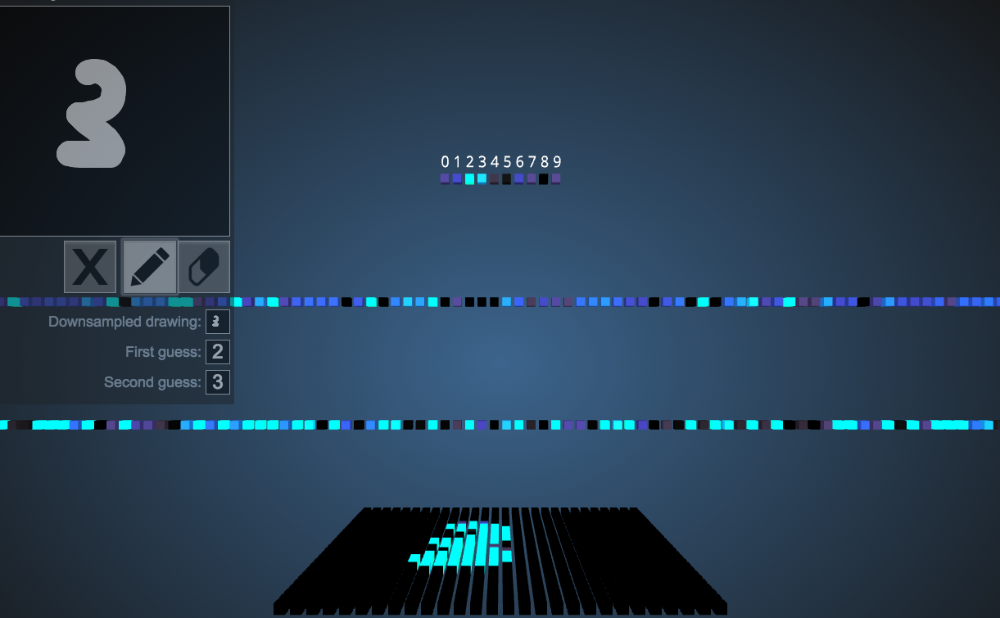
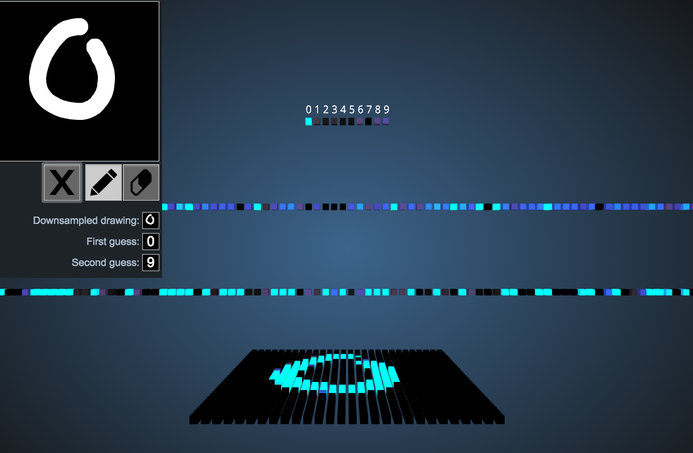
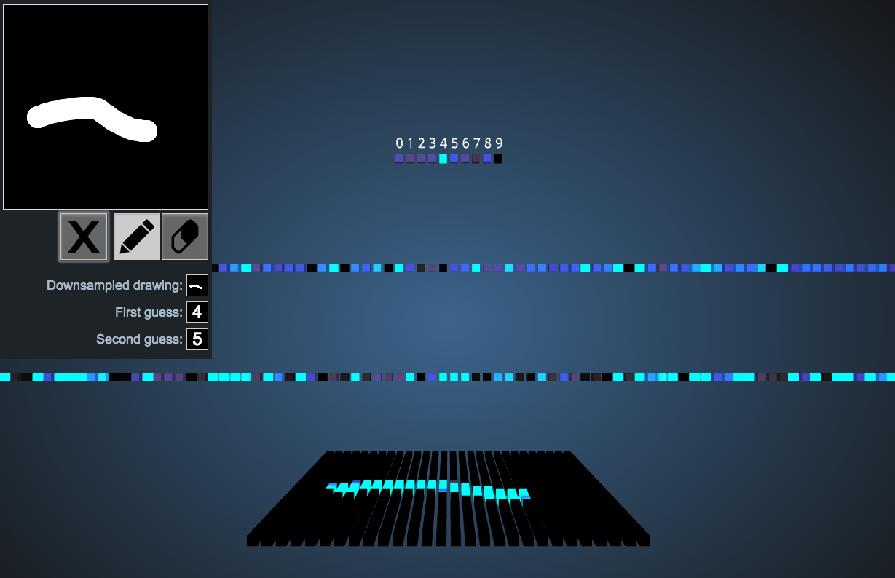
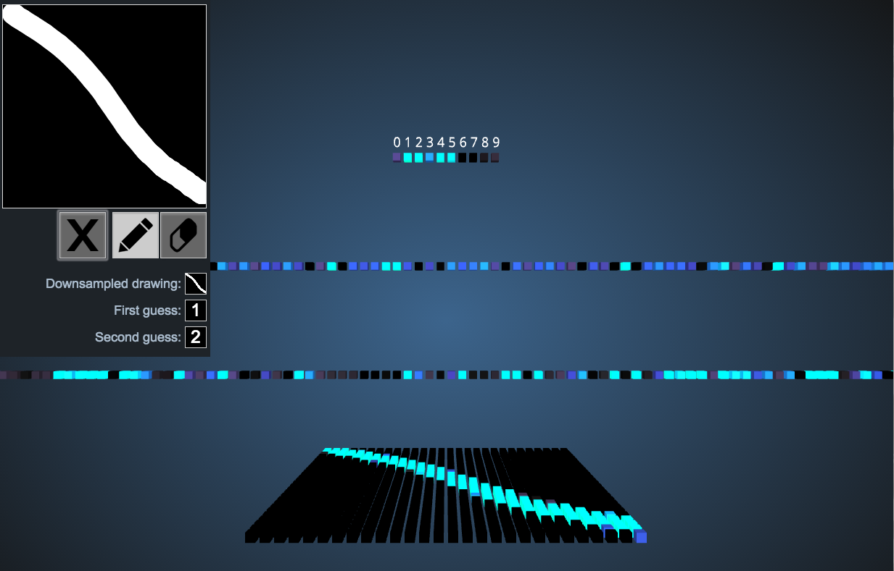
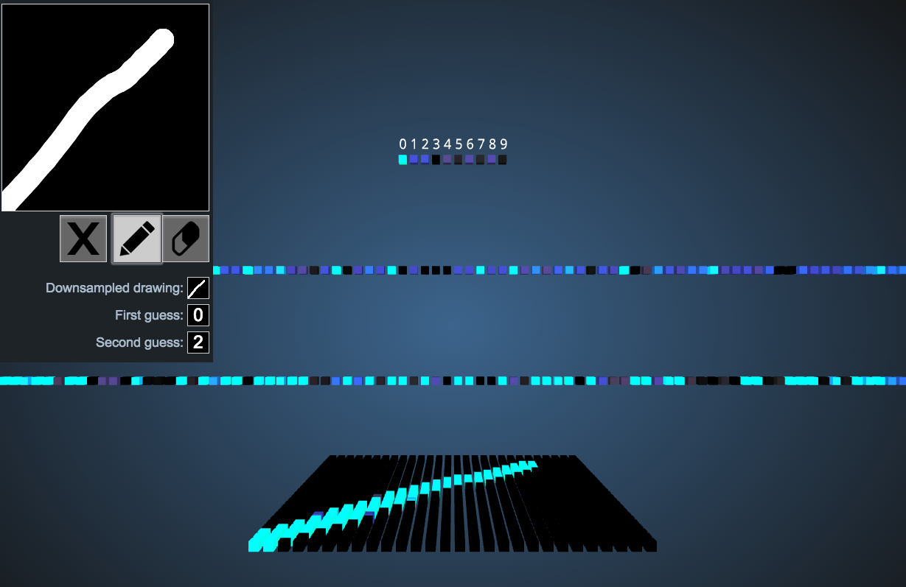
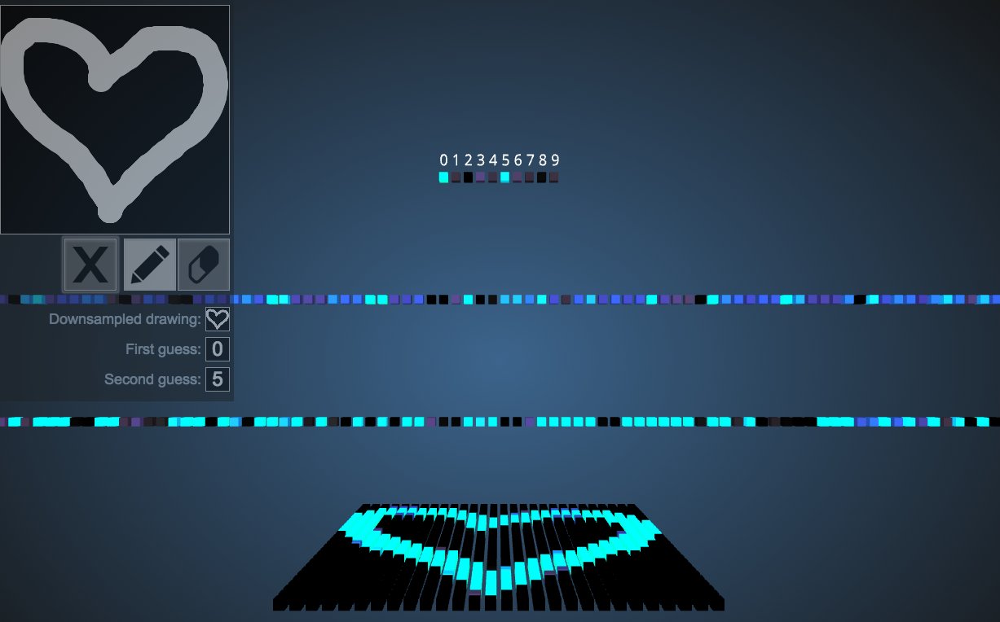
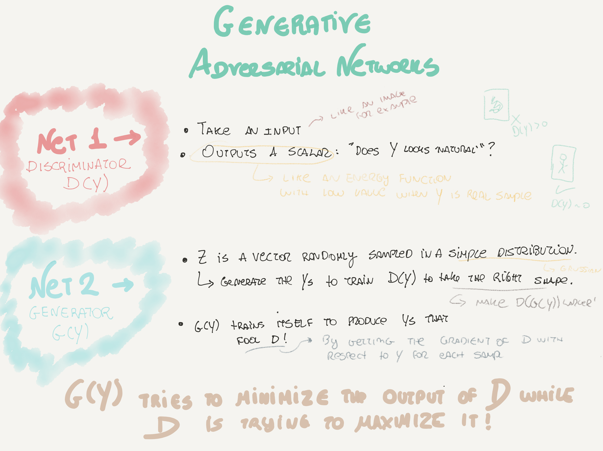

Papers
- Decoupled Neural Interfaces using Synthetic Gradients.
- Explaining Deep Convolutional Neural Networks on Music Classification.
- Accelerating Eulerian Fluid Simulation With Convolutional Networks.
-
Residual Networks of Residual Networks: Multilevel Residual Networks.
-
Classic references on Deep Reinforcement Learning:
- Playing Atari with Deep Reinforcement Learning, (Mnih et. al 2014).
- Human-level control through deep reinforcement learning (Mnih et. al 2015).
- Reinforcement Learning: An Introduction.
- Demystifying Deep Reinforcement Learning.
- Introduction to Reinforcement Learning with Function Approximation.
- Reinforcement Learning.
- David Silver Course on RL.
- Reinforcement Learning.
News
- IBM’s New Artificial Neurons a Big Step Toward Powerful Brain-Like Computers.
- Quora's 'What are some recent and potentially upcoming breakthroughs in deep learning?'.
- The next wave of AI is rooted in human culture and history.
- We don't understand AI because we don't understand intelligence.
- An Intuitive Explanation of Convolutional Neural Networks. Great.
- Instagram photos reveal predictive markers of depression.
Talks
- Building Machines that Imagine and Reason. Nice introduction to Deep Generative Models.
Tools
- Aetros.
- Docker image for artificial intelligence. Auralisation of a CNN by converting the learned convolutional features that are obtained from deconvolution into audio signals.
- A list of popular github projects related to deep learning.
Videos
- Inside DeepMind.
- RE•WORK Interview with Yoshua Bengio - Deep Learning Summit, Boston, 2016.
- The Social and Economic Implications of Artificial Intelligence Technologies in the Near-Term.
Fun
- MIT's and Microsoft's flash tattoos can control gadgets.
- An Autonomous Agent Choreo.
- 2016 Isaac Asimov Memorial Debate: Is the Universe a Simulation?. Real scientists discussing the topic.
- Reddit 'If we believe, humans are able to create AGI, and consequently ASI, we are mostly likely in a simulation already' funny thread.
- Reddit 'We are Living in Simulation' funny thread.
- 20 Big Questions about the Future of Humanity.
Visualizing the network for MNIST Database of handwritten
This tool allows you to vizualize a NN trained with MNIST to recognize digits. There you can see the ouput layer (top), followed by the second hidden layer, the first hidden layer, and the input layer.
Interesting examples:
     
33 is an awesome number.

Comments !